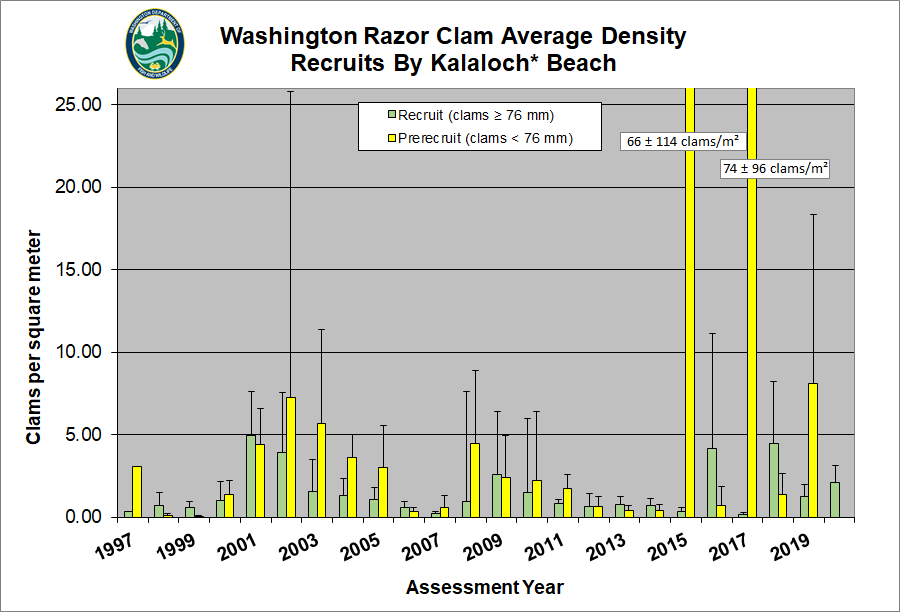
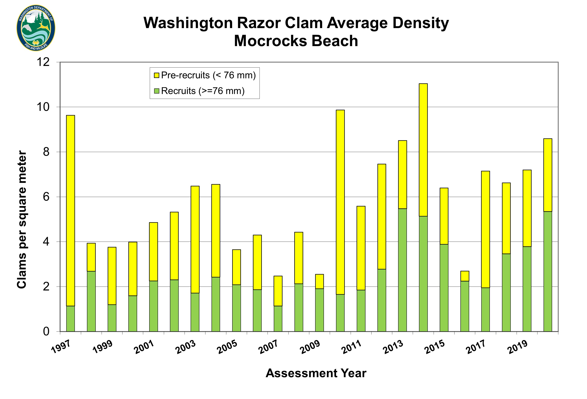

Trends - Kalaloch Beach
 Average density (clams per m2) of razor clam recruits (≥76 mm) and pre-recruits (<76 mm) at Kalaloch Beach from 1997–2019. The Kalaloch razor clam management beach lies between Olympic National Park South Beach Campground and Brown’s Point. Pre-recruits are below the preferable catch size and recruits are above the preferable catch size. Source: WDFW; Fradkin, 2019; Image: D. Ayres/WDFW.
Trends - Mocrocks Beach
 Average density (clams per m2) of razor clam recruits (≥76 mm) and pre-recruits (<76 mm) at Mocrocks Beach from 1997–2020. The Mocrocks razor clam management beach lies between the Copalis River and the southern boundary of the Quinault Indian Reservation, just south of the Moclips River. Pre-recruits are below the preferable catch size and recruits are above the preferable catch size. Source: WDFW, 2020; Quinault Tribe, 2020; Image: D. Ayres/WDFW.
Trends - Pt. Grenville
 Average estimated summer density (clams per m2) of razor clam recruits (≥76 mm) and pre-recruits (<76 mm) from 2001–2018 for Point Grenville, an important tribal harvest area within the 23 miles of coastline encompassed by the reservation of the Quinault Indian Nation. Population estimates are based on transect densities that are averaged and then expanded across the estimated habitat available on each beach; error estimates have not been calculated. Source: Quinault Indian Nation, 2019; Image: J. Schumaker/Quinault Indian Nation.
Average estimated summer density (clams per m2) of razor clam recruits (≥76 mm) and pre-recruits (<76 mm) from 2001–2018 for Point Grenville, an important tribal harvest area within the 23 miles of coastline encompassed by the reservation of the Quinault Indian Nation. Population estimates are based on transect densities that are averaged and then expanded across the estimated habitat available on each beach; error estimates have not been calculated. Source: Quinault Indian Nation, 2019; Image: J. Schumaker/Quinault Indian Nation.